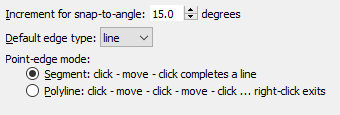

挤出选项
“选项”对话框中有一个“挤出”面板，可在其中设置挤出窗格中用户可配置的各方面内容。（可从“工具”菜单访问该对话框。）

图 1：“选项”对话框的“挤出”面板
捕捉角度增量：设置在使用点-边工具绘制边并按住 Ctrl 键时的捕捉角度。该行为在 创建点与边——键盘修饰键（Creating Points and Edges - Keyboard Modifiers） 主题中描述。
默认边类型：指定任何新绘制边的边类型（根据此处的设置，将为“直线”、“曲线”或“圆弧”之一）。
点-边模式：确定在构造视图中添加边的方法。线段模式一次添加一条边。折线模式连续添加边，直到您退出该模式。
| 这些内容对您有帮助吗？… | FLAC3D © 2019, Itasca | 原文更新于 2020 年 10 月 8 日 |
| 版权与免责声明 | ||